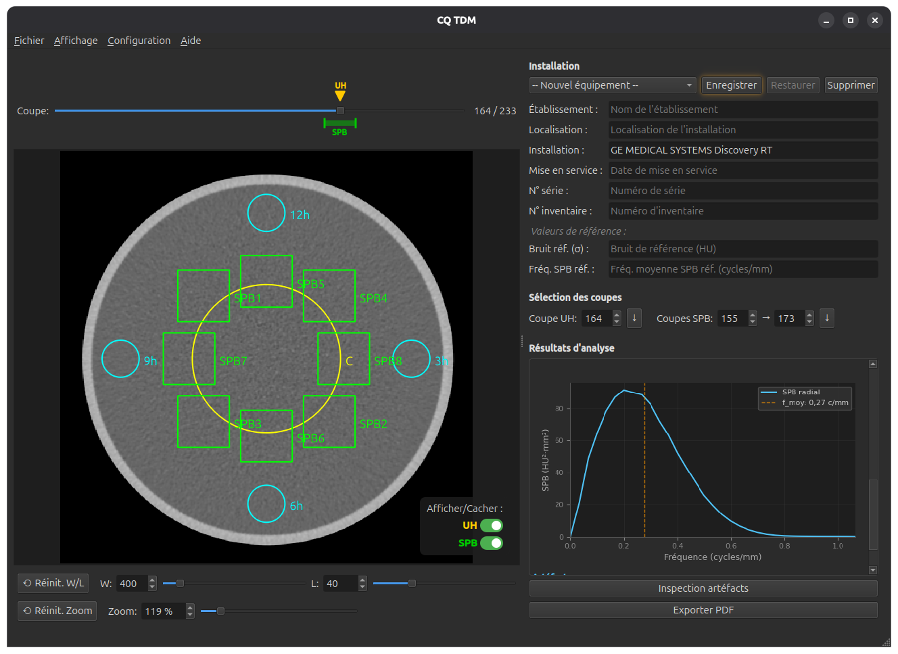

Application de bureau multiplateforme pour réaliser le contrôle qualité interne (CQI) des tomodensitomètres, conforme aux exigences réglementaires de l'ANSM.

Fonctionnalités
Tous les outils nécessaires pour réaliser le contrôle qualité interne des scanners selon les exigences de l'ANSM.
Chargement et analyse des images DICOM de fantômes à eau avec extraction automatique des métadonnées.
Mesure de l'exactitude du nombre CT, de l'uniformité et de la stabilité avec positionnement automatique des ROI.
Calcul du Spectre de Puissance du Bruit avec algorithme validé contre les données de référence iQMetrix.
Génération de rapports réglementaires complets avec mesures, statut de conformité et analyse des tendances.
Cadre Réglementaire
CQ TDM implémente les tests de contrôle qualité définis par l'Agence Nationale de Sécurité du Médicament et des produits de santé (ANSM) pour le contrôle qualité interne des tomodensitomètres.
Téléchargement
Disponible pour toutes les plateformes majeures. Gratuit et open source.
L'auteur ne garantit pas la validité des résultats de mesure produits par ce logiciel. Les utilisateurs sont seuls responsables de la vérification et de la validation de toutes les mesures avant toute utilisation réglementaire. Cet outil est fourni pour aider aux procédures de contrôle qualité mais ne remplace pas le jugement professionnel ni les équipements d'étalonnage officiels.